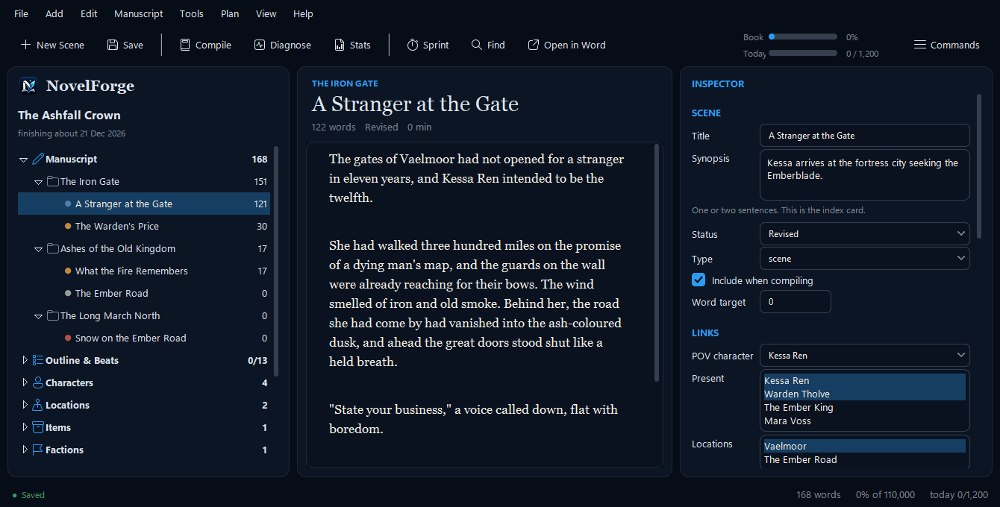
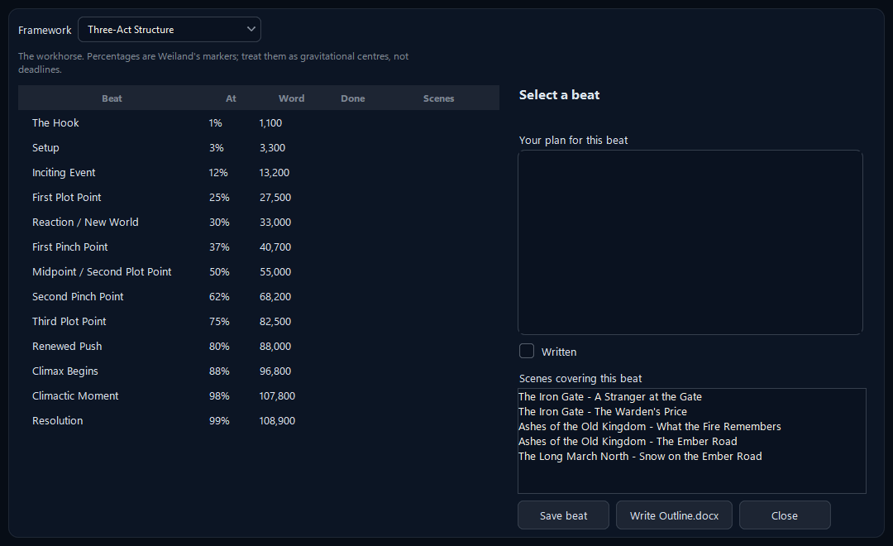
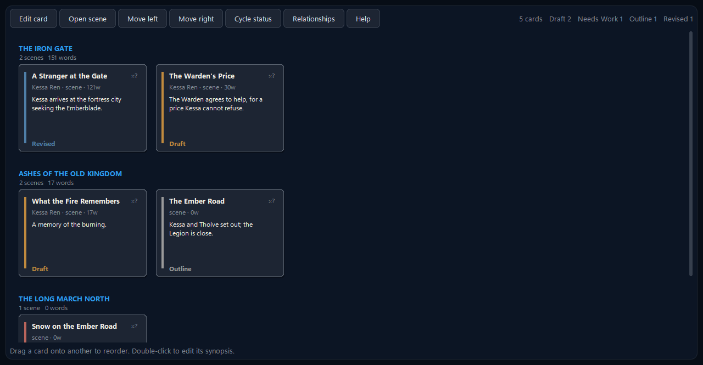
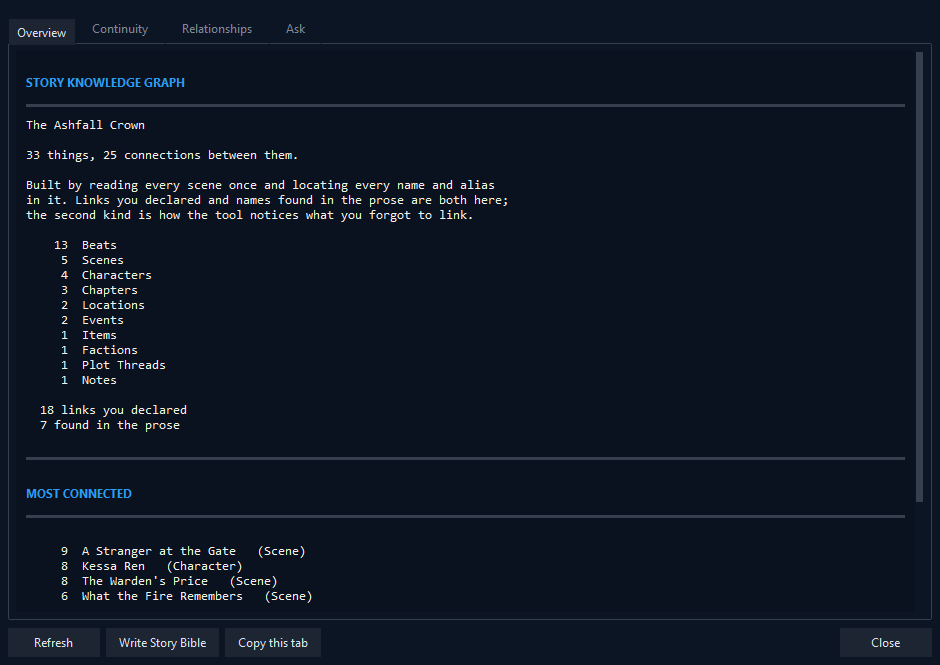
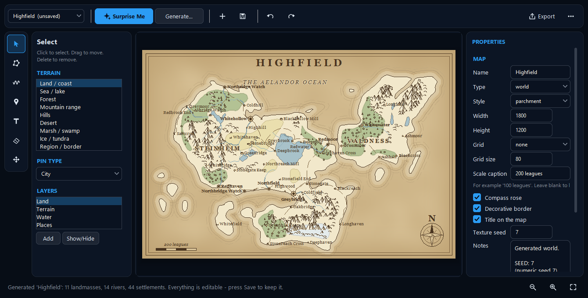
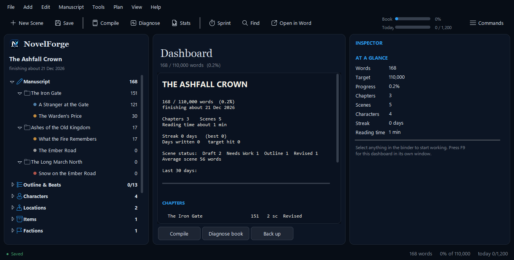
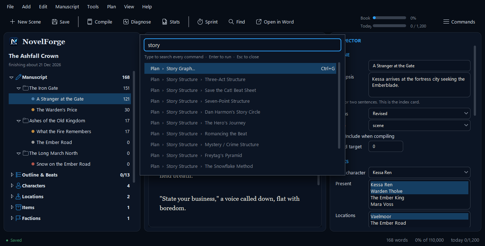

Everything a novelist needs, in one free, offline studio
A binder and corkboard, nine outline frameworks, a story graph that checks continuity, a fantasy map maker, offline prose diagnostics and a compiler that produces a standard manuscript. All of it reads and writes ordinary Word files on your own disk.
- Writing
- Planning and structure
- Reference sheets
- Story graph and continuity
- Maps and worldbuilding
- Compiling
- Diagnostics
- Statistics
- Never losing work
- Speed and keyboard
Writing: stay inside the story
The editor is deliberately quiet. Every scene is its own real .docx file, which you can open and edit in Microsoft Word or in NovelForge, in either direction, and the two always stay in sync.
- Focus mode, distraction-free mode and typewriter scrolling take the interface out of your way.
- Ghost mode hides your text as you type, for the perfectionist who cannot stop editing a sentence they have not finished.
- A sprint timer counts the words you write in a fixed slice of time, and tells you your pace.
- Live spelling and grammar marks and word completion are tuned to your manuscript's own names and invented words, not a generic dictionary, so “Kessa Ren” is not flagged on every page.
- Drafting anyway: type
[check the tide timing]and keep going. Later, one command collects every bracket tag in the book into a single document with its surrounding context.

Planning and structure
Know where the story is going without being forced into one shape.
- Nine outline frameworks are built in: Three-Act, Save the Cat, Snowflake, Seven-Point, Story Circle, Hero's Journey, Romancing the Beat, Mystery/Crime and Freytag. Switch between them freely; each framework's answers are kept, so trying another costs nothing.
- The corkboard shows every scene as an index card, colour-coded by status, and you drag cards to reorder the book. The character-relationship web is one click away.
- A free-text timeline sorts invented calendars correctly, so “the third moon of Harrowmere” lands where it should.
- Scene and sequel structure after Dwight Swain, with a value-shift check that asks whether anything actually changed in the scene.
- Reverse outline: build an outline from what you really wrote, then compare it with the one you planned. It is the fastest structural edit there is.
- Drafts let you try a scene another way without losing the original, and an idea inbox suggests where a stray thought belongs by matching it against your own scenes and characters.

Structure that bends to you.
A framework is a set of questions, not a straitjacket. Fill in what serves the story, leave the rest, and swap frameworks whenever the book tells you it wants a different shape.

See the whole book at once.
Every scene is a card with its synopsis and status. Drag one onto another to reorder; the Word files and the outline follow.
Reference sheets that are real Word documents
Characters, locations, items, factions and plot threads each get a Word reference sheet. A character sheet has roughly 90 fields, including a Ghost / Lie / Truth / Want-versus-Need arc framework. Fill in what serves the story; NovelForge reads back whatever you typed. Because they are ordinary .docx files, your editor, your co-writer or your future self can open them without NovelForge at all.
Research notes can be linked to the scenes and characters they are for, so they show up on them, in the inspector and in the story bible, instead of living in a folder you forget.
The story graph and continuity checker
Press Ctrl+G and NovelForge reads your whole manuscript and builds a living map of it: every character, place, object and thread, and every scene each one appears in.
- It finds entities two ways: links you set by hand, and names it spots in your actual prose. That is how it notices the character you mentioned in chapter nine but never linked.
- A 15-point continuity checker runs on the same graph: dropped plot threads, dates that run backwards, a character who appears before they are born.
- “What depends on this scene?” shows what would break before you delete something.
- One-click Story Bible: a complete Word reference of the book, always current because it is built from the manuscript itself.

Maps and worldbuilding
Press Surprise Me and a whole fantasy world appears: coastlines, mountain ranges, forests and deserts, rivers that run from the highlands to the sea, roads that follow the land, and dozens of named settlements, all reproducible from a seed. Everything is editable afterwards, and pins link straight to your Location sheets. Export as PNG, SVG or a Word document with a legend.

Compiling to a standard manuscript
One key (F5) gathers every scene into a single Word document in standard manuscript format:
- US Letter, one-inch margins, 12-point, double spaced, half-inch first-line indent
- A title page with your contact block and a rounded word count
- A running header (
Surname / TITLE / page) from page two, each chapter on a fresh page,#between scenes andTHE ENDat the close - An optional table of contents; also plain-text export and a treatment (every synopsis in reading order, which reads like a pitch document)
Italics and bold survive; everything else is normalised. That is the point of compiling.
Offline prose diagnostics
Roughly twenty checks, all heuristic, all local, none of them ever rewriting your words: -ly adverbs, filler and filter words, passive constructions and stock phrases, dialogue-tag problems, sentence rhythm and over-long sentences, word echoes and repeated openings, dialogue-to-narration ratio, which of the five senses appear, and reading level. They are worded as observations, not corrections, because your voice beats every rule in the list.
There is also a five-question writer's-block diagnostic that asks the causes in order of how common they are, because the fixes for them contradict each other.
Statistics that respect revision
The dashboard (F9) shows progress against your target, your streak, your pace and a projected finish date, plus a 30-day sparkline, a per-chapter breakdown, point-of-view balance, and plot-thread coverage. It keeps two numbers, added and net, so a revision day where you cut 800 words and wrote 600 counts as real work instead of “−200”.

Never losing your work
- Atomic writes: each file is written under a temporary name and swapped in, so a crash mid-save cannot leave a half-written document. This also works safely inside OneDrive folders.
- Version snapshots: a document is copied before Find and Replace edits it, before you switch to another draft of a scene, and when you accept a crash recovery; restore any copy without losing the current version.
- Verified backups: Ctrl+B zips the whole project, then reopens the zip and checks its checksums before reporting success.
- Crash recovery: a journal that asks before it restores anything.
- Undo and redo for structural edits: delete a chapter, get it back, files included.
- Verify this project (F4) reports what is in the project and anything broken (missing files, links to things you deleted, map pins pointing at deleted places), with a health score.
Fast, and driven by the keyboard
NovelForge opens in about a second, never asks you to sign in, and never does work on a timer behind your back. Press Ctrl+Shift+P to open the command palette, type what you want (“story graph”, “backup”, “theme”) and press Enter. It searches every command in every menu, so it can never fall out of date. There are four themes, including a dark navy “Premium” one, and the interface adapts to scaled high-DPI displays (tested at 125%).

Try it. It costs nothing.
Free for Windows 10 and 11. Your novel stays in Word files you own.